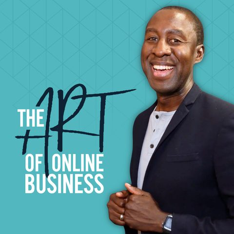

Paste one of your live Facebook or Instagram ads and your numbers. In about two minutes you get the single biggest fix, ranked the way I'd rank it if I opened your account myself.
Takes about 2 minutes. No call, no pitch to sit through.

I'm Kwadwo, say QUĀY-jo. I run Facebook and Instagram ads for online course creators, a lot of them earning $350k to $1.2M a year, and I host The Art of Online Business podcast, which has passed 5 million downloads. This is the same first read I'd give a paying client, in the same order I'd actually check the account.
Step 1 of 2 · Your ad
Fill in what you have. The more real numbers you give me, the sharper the review.
Step 2 of 2 · Your result
I found the biggest thing to fix first. Tell me where to send it and I'll show it to you now and email you a copy to keep.
One email with your result, plus my weekly ads notes. Unsubscribe anytime.
Your #1 fix
I check ads in this order because fixing something at the top makes everything below it work better. Your issue is marked.
This review is a starting point based on what you entered, not a full account audit. Nothing about ads is ever 100% guaranteed, but fixing the top issue first is where the money is.